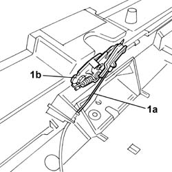
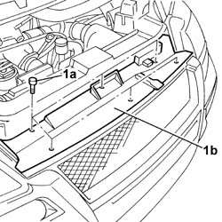
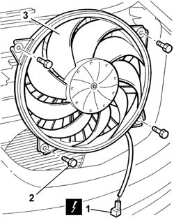

1088E12 <x>LEFT ENGINE COOLING FAN OR FANS - R&R</x>
- Path
- Procedures > 10 ENGINE > 1088 ENGINE COOLING > 1088E COOLANT TEMPERATURE CONTROL DEVICES > 1088E12 <x>LEFT ENGINE COOLING FAN OR FANS - R&R</x>
- Kind
- repair procedure (removal / refitting; the operation number is the code)
- Applies to
- engines: 2.0 16V JTD, 2.2 16V JTD; all production periods
- Interactive page
- https://sloeber94.github.io/elrnDB-fUlss/en/#/179000220
Applies to: engines: 2.2 16V JTD; all production periods
 Removing
Removing
 Refitting
RefittingOp. 5530B56 BATTERY DRIP TRAY COVER - R.R.
- Disconnect the negative battery terminal.
1. Release the bonnet release cable (1a) from the bonnet lock (1b).

Applies to: engines: 2.2 16V JTD; all production periods
1. Undo the fixing bolts (1a) and remove the front bumper grille (1b).

Applies to: engines: 2.2 16V JTD; all production periods
1. Disconnect the electrical connection.
2. Undo the retaining bolts.
- Release the wiring from the retainers.
3. Remove the fan.

Applies to: engines: 2.2 16V JTD; all production periods
Refitting
Removing- Position the fan and the wiring.
- Tighten the retaining bolts.
- Connect the electrical connection.
- Place the front bumper grille in position and tighten the fixing bolts.
- Refit the bonnet release cable on the lock.
- Connect the negative battery terminal.
Applies to: engines: 2.0 16V JTD; all production periods
Removing
RefittingOp. 5530B56 BATTERY DRIP TRAY COVER - R.R.
- Disconnect the negative battery terminal.
1. Release the bonnet release control cable (1a) from bonnet lock (1b).
Applies to: engines: 2.0 16V JTD; all production periods
1. Undo bolts (1a) and remove front bumper grille (1b).
Applies to: engines: 2.0 16V JTD; all production periods
1. Disconnect the electrical connection.
2. Undo the bolts.
- Release the wiring from the retainers.
3. Remove the fan.
Applies to: engines: 2.0 16V JTD; all production periods
Refitting
Removing- Position the fan and wiring.
- Tighten the retaining bolts.
- Connect the electrical connection.
- Position the front bumper grille and tighten the bolts.
- Reattach the bonnet opening control cable to the catch.
- Connect the negative battery terminal.